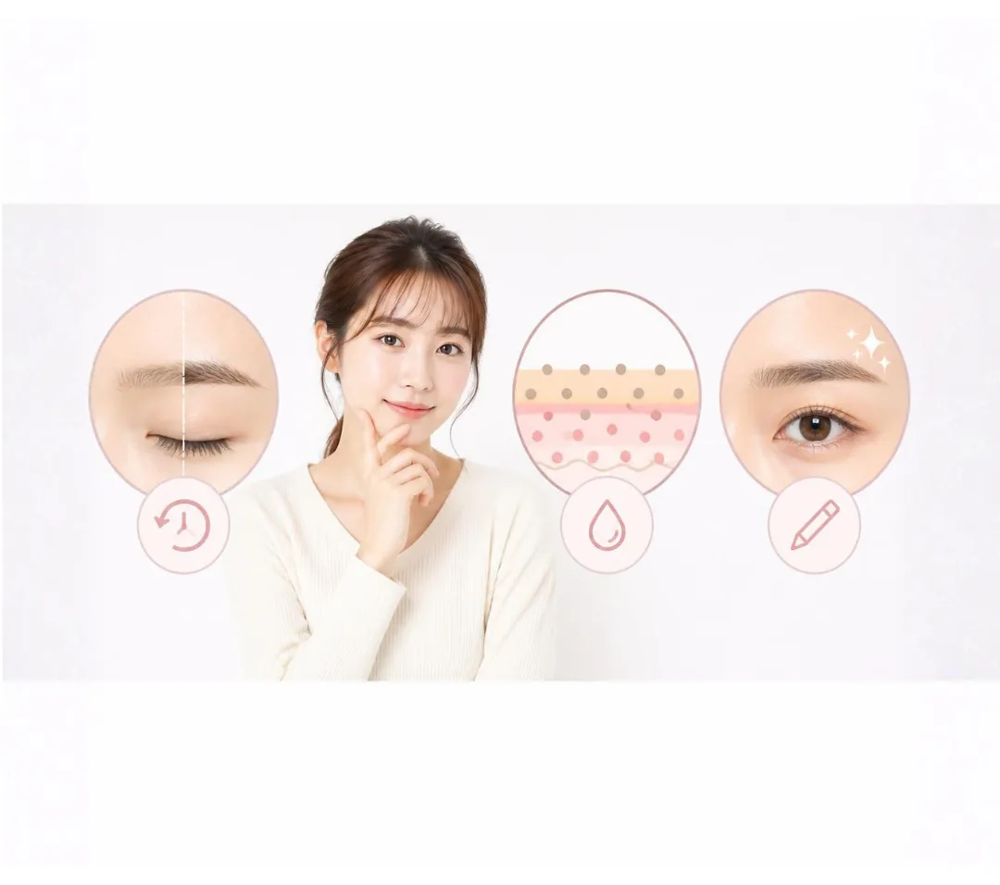
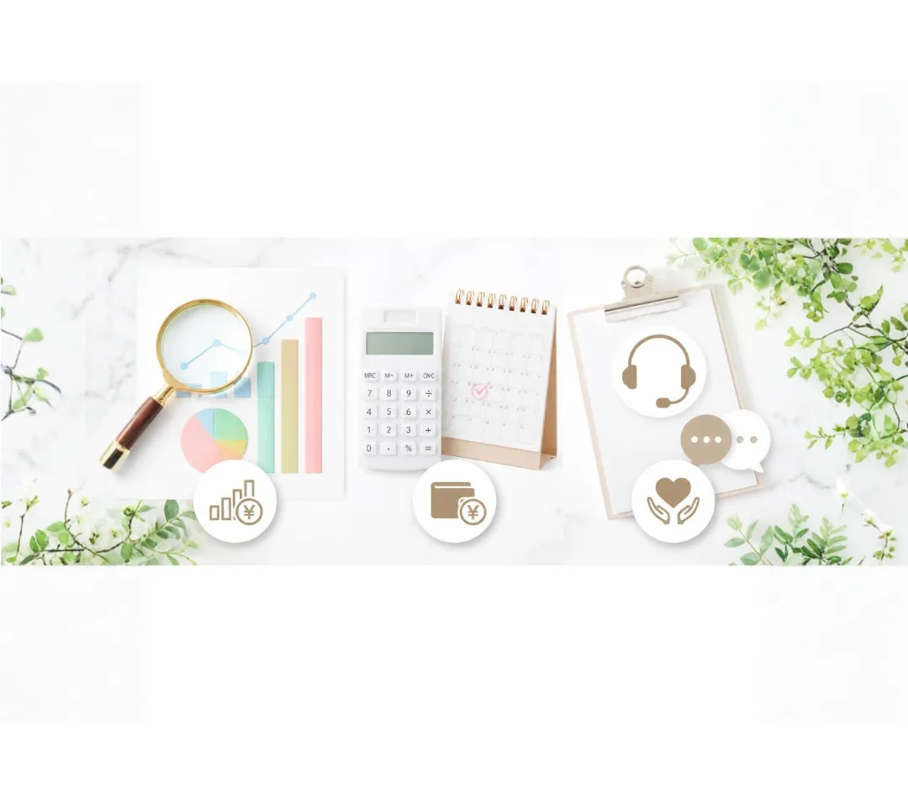

アートメイクのリタッチは必要？適切な時期・回数・費用の目安を解説

「アートメイクって一度受けたらずっとそのまま？」
「リタッチって本当に受けなきゃいけないの？」
これからアートメイクを検討されている方からよくいただくのが、この「リタッチ（メンテナンス）」に関する疑問です。
結論からお伝えすると、アートメイクを理想通りの美しい仕上がりにし、長持ちさせるためにはリタッチが不可欠です。今回は、リタッチが必要な理由から、適切な時期・回数の目安、費用の見極め方まで分かりやすく解説します。
1. アートメイクに「リタッチ」が必要な3つの理由
タトゥーとは異なり、アートメイクは皮膚の極めて浅い層（表皮）に色素を入れていきます。そのため、時間が経つと肌のターンオーバーと共に自然に薄くなっていくのですが、リタッチを行うことでその美しさをキープできます。

① ターンオーバー（肌の代謝）による色抜けを防ぐため
人間の皮膚は一定の周期で生まれ変わっています。特に施術1回目は、肌の防御反応によって色素が排出されやすく、「思ったより薄くなった」と感じることが一般的です。
② 色ムラや形の微調整をして「完成」させるため
アートメイクは基本的に「2回の施術」を経て完成するものと考えられています。1回目でベースを作り、かさぶたのようなものが剥がれて落ち着いた後の状態を見極めた上で、2回目（リタッチ）で色ムラを埋めたり、濃さや細部のデザインを微調整していきます。
③ 定期的なメンテナンスで理想の形を長くキープするため
完成後も、1〜2年ほど経つと徐々に全体の色味が薄れていきます。完全に消えてしまう前に定期的なリタッチを行うことで、いつでもきれいな状態を維持できます。
2. 適切な「リタッチの時期」と「回数の目安」
リタッチには「完成させるためのリタッチ」と「維持するためのメンテナンス」の2種類があります。
【初回〜完成まで】1回目から2〜3ヶ月後
1回目の施術から必ず1ヶ月は期間をあけて、約2〜3ヶ月後が2回目のリタッチに最適なタイミングです。肌の傷が癒え、ターンオーバーが一巡して色素の定着具合がはっきりと確認できるようになります。
【維持・メンテナンス】1年〜2年おき
2回目でしっかり定着した後は、1年〜2年に1回程度のペースでメンテナンスを行うのがおすすめです。完全に消える前に重ねることで、常にナチュラルで美しい眉やリップを保てます。
3. リタッチの費用目安とチェックしておきたいポイント

アートメイクの料金体系はクリニックによって異なります。リタッチを無理なく続けるために、事前に費用の仕組みを確認しておきましょう。
業界の費用相場：1回あたり 4万円〜8万円前後（地域、部位や技法、アーティストのランクによる）
クリニック選びで見ておきたいポイント
1回ごとの料金設定で通いやすいか
セット契約の縛りがなく「1回ごとの料金設定（都度払い）」を採用しているクリニックを選ぶと、コースの期限に追われることがありません。1回目の定着具合やご自身のスケジュールに合わせて、ベストなタイミングで2回目以降の施術を受けられるため、無理なく予算を計画できます。
術後の相談体制が整っているか
施術後に気になることや不安が出てきた際、気軽に相談できるサポート体制があるかも重要です。休診日を除いて基本的に無休で、営業時間内であればいつでも施術に関するお悩みや不安を相談できるクリニックを選んでおくと、術後も安心して過ごせます。
4. リタッチを受ける際の注意点
リタッチ時も、基本的には1回目と同じケアが必要です。
- ダウンタイム期間のケアを守る：リタッチ後も数日間は赤みや腫れが出ることがあります。クリニックから処方されるアフタークリーム等での保湿やアフターケアで説明を受けた注意点を守りましょう。
- デザインの大幅な変更は慎重に：リタッチは「整える・補強する」施術です。全く異なるデザインへの変更は難しいため、カウンセリング時に将来を見越した流行に左右されないナチュラルなデザインを相談しておくことが大切です。
まとめ：リタッチを正しく理解して、すっぴんにも自信を
アートメイクは、1回きりで終わらせるのではなく「2回の施術で完成させ、その後は1〜2年ごとにメンテナンスする」のが美しい状態を保つコツです。
通いやすい料金体系や、アフターサポートがしっかり整った信頼できる医療クリニックを選び、ストレスフリーで理想的な美しさを手に入れましょう。